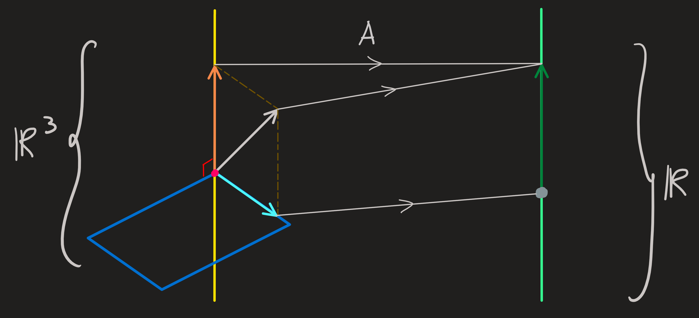
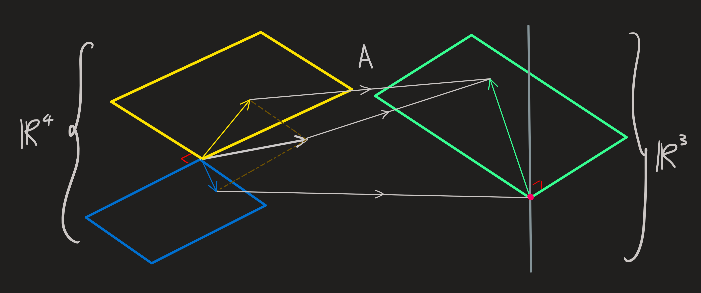
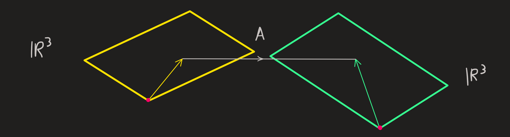
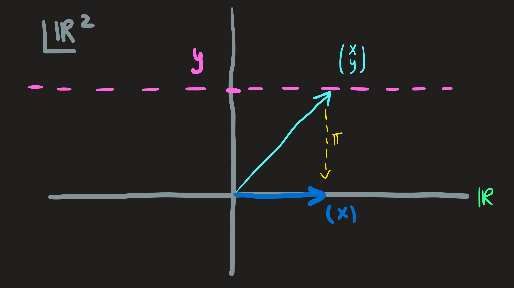
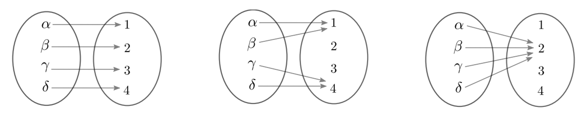

Linear functions
Up to now, we learned a more practical part of the course:
How to compute the solution of \(A\mathbf{x}=\mathbf{b}\)?
How to compute a basis for the \(4\) subspaces associated with \(A\)?
How to compute the inverse \(A^{-1}\)?
How to compute the determinant?
It always how to compute. Now we enter a more conceptual part of the course and organize ideas.
The concept of a vector space
Suspend what you know: We have been speaking about a vector space as being closed under linear combinations. However if we stop to think about it, we can only compute a linear combination provided we know how to multiply vectors by numbers and how to add vectors, see below:
\[ \overbrace{\alpha u}^\text{number times a vector} + \overbrace{\beta v}^\text{number times a vector}=\underbrace{u'+v'}_\text{sum of vectors} \]
For the moment we will consider these two operations in separate and also for the moment suspend how they are done in practice, thus, when we think about:
\[ (1,3)+(4,7)=?\qquad 10(2,5)=? \]
We do not know how to do these operations.
Now lets return to the idea of a vector space.
Today: A set of things is just a list. Let us label those things as
\[ \mathbb{V}=\{v_1,v_2,\dots,v_n\} \]
What can we do with the things in this set?
We can define a map, a map is a rule or sequence of operations that tell me how to assigns to each pair of elements in \(\mathbb{V}\) a new element in \(\mathbb{V}\). Right now, we are not thinking about a specific map, you can even imagine (if it helps you) that aliens choose the map, but did not told us what it is (except for that fact that they chose one.)
Another kind of map they decide to introduce, for which we do not know yet how it operates consists in assigning to each pairing of a real number and an element of \(\mathbb{V}\), another element of \(\mathbb{V}\).
The notion of map as we just described in words is described in mathematical notation as:
\[ \begin{align} + : \mathbb{V}\times\mathbb{V} &\longrightarrow\mathbb{V}\\ (u,v)&\longmapsto u\tilde{+}v \end{align} \]
and
\[ \begin{align}\cdot : \mathbb{R}\times\mathbb{V} &\longrightarrow\mathbb{V}\\(\alpha,v)&\longmapsto \alpha\cdot v\end{align} \]
The \(u+v\) is the symbol for the element in \(\mathbb{V}\) that corresponds to the pair \((u,v)\). And \(\alpha\cdot v\) is the symbol for the element assigned to \((\alpha,v)\).
Now they disclose to us a few properties that their maps have:
Commutative: \(u+v=v+u\). [You can flip the order]
Associative: \((u+v)+w=u+(v+w)\). [You can shift the brackets]
Neutral element: There is a neutral element wrt to \(+\): There is an element in \(\mathbf{V}\), call it \(o\) so that for all \(u\in \mathbb{V}\) we find \(u+o=u\). [This is not \(0\) from the real numbers, it is the zero of \(\mathbb{V}\). To avoid confusion you can call \(o\) as circle rather than zero.]
Inverse element: For every element \(u\) there an element, which we denote by \(-u\), that guarantees \(u+(-u)=o\). [ \(u-v\) is just a short notation for \(u+(-v)\)]
The next list of rules describe how the operations \(+\) and \(\cdot\) interact when both present in a calculation, two of this rules are distributive rules:
Associative: \(\alpha(\beta u)=(\alpha\beta)v\)
Distributive I: \((\alpha+\beta)u = \alpha u +\beta u\)
Distributive II: \(\alpha (u +v) = \alpha u + \alpha v\)
Unitary: \(1 u = u\)
We do not know specifically how the assignments are made, the only thing we know is: whatever they are, they obey the rules above.
A vector space is a triplet \((\mathbb{V},+,\cdot)\)
Its like describing someone: you can list all its characteristics, or just list the essential one. Here essential depends for what the description is useful for.
Why is maps and these rules? Because on them fit many useful maps in practice.
These rules all boil down to \(\mathbb{V}\) is closed under l.c. where the l.c. is realized in practice the natural and expected way. The rules above are the rules of common sense for l.c.
What specific sets and \(+\) and \(\cdot\) operations fit the profile above? Here are some examples:
Example 1 of a vector space
The set of all polynomials:
\[ \mathbb{P}=\{\dots+a_n x^n+a_{n-1} x^{n-1} +\dots +a_1 x +a_0\,\,|\,\, a_i \text{'s are real}\} \]
Together with:
\[ \begin{align}+ : \mathbb{P}\times\mathbb{P} &\longrightarrow\mathbb{V}\\(p,q)&\longmapsto (p+q)(x)=p(x)+q(x)\end{align} \]
Here, the \(+\) sign between functions \(p\) and \(q\) manifests in practice as the summation \(+\) of real numbers \(p(x)\) and \(q(x)\).
\[ \begin{align}\cdot : \mathbb{R}\times\mathbb{P} &\longrightarrow\mathbb{V}\\(\alpha,p)&\longmapsto (\alpha\cdot p)(x):=\alpha\cdot p(x)\end{align} \]
The multiplication between a real number and the function \(p\) is understood in therms of the multiplication between the real number \(\alpha\) and \(p(x)\).
All the rules above can be checked for this example.
The natural basis for this vector space is: \(\{1,x,x^2,\dots\}\)
Example 2 of a vector space
Consider the set:
\(\mathbb{V} = \{(x,y)\,\,|\,\, x,y\in \mathbb{R}\}\)
And the maps:
\[ \begin{align} + : \mathbb{V}\times\mathbb{V} &\longrightarrow\mathbb{V}\\ (\mathbf{u},\mathbf{v})&\longmapsto \mathbf{u}+\mathbf{v} := (u_x,u_y)+(v_x,v_y)=(u_x+v_x,u_y+v_y) \end{align} \]
and
\[ \begin{align}\cdot : \mathbb{R}\times\mathbb{V} &\longrightarrow\mathbb{V}\\(\alpha,\mathbf{u})&\longmapsto \alpha\cdot \mathbf{u}:=(\alpha u_x,\alpha u_y)\end{align} \]
Once again the summation of vectors is in practice the summation of numbers and the multiplication of a vector by a real number means the multiplication of its entries (real numbers) by the real number \(\alpha\).
Notice that when I write \((u_x,u_y)+(v_x,v_y)\) one may wonder what it means, we know it is another element of \(\mathbf{V}\), but which one? To answer that we have to tell how the operation \(+\) between two elements of \(\mathbb{V}\) actually maps. Whatever the way it maps, it must be consistent with the rules defined above. It turn out that to define this \(+\) as doing \((u_x+v_x,u_y+v_y)\) (a plus between reals) is a good and useful choice.
The natural choice of basis for this vector space is: \(\{(1,0),(0,1)\}\)
Intuitive idea of structure of a vs (Retirar?)
For example let us define the summation and multiplication by a number.
For example take \(\mathbb{R}^2\), we know that:
\[ (1,3)+(0,1) = (1,4) \]
Therefore, the vectors \((1,3)\) and \((0,1)\) are connected to \((1,4)\).
When I multiply a vector by number:
\[ 3(1,9) = (3,27) \]
and as a result the vector \((1,9)\) is connected with \((3,27)\).
A generic l.c. \(\alpha(1,3)+\beta(0,1) = (\alpha,3\alpha+\beta)\). Connects \(\alpha(1,3)\) and \(\beta(0,1)\) with \((\alpha,3\alpha+\beta)\).
The operation l.c. creates this web of connectivity between elements of a vector space.
Linear functions (START HERE)
Consider two vector spaces \(\mathbb{R}^n\) and \(\mathbb{R}^m\).
A linear function is a bridge between elements of both vectors spaces defined as follows:
Definition 1 \[ \begin{align} f:\mathbb{R}^n&\longrightarrow \mathbb{R}^m\\ \bf{u}&\longmapsto f(\bf{u}) \end{align} \]
such that the following rule is obeyed: \(f(\lambda \bf{u}+\mu \bf{v}) = \lambda f (\bf{u}) + \mu f(\bf{v})\)
for all \(\lambda,\mu \in \mathbb{R}\) and \(\bf{u},\bf{v}\in \mathbb{R}^n\).
Terminology: The vector space \(\mathbb{R}^n\) is the domain of the function \(f\), while \(\mathbb{R}^m\) is the codomain (of \(f\))
When referring to a linear function we will use \(\sim\) and write: \(f:\mathbb{R}^n\overset{\sim}{\longrightarrow} \mathbb{R}^m\).
We do know how \(f\) maps between the spaces, but whatever procedure \(f\) is, it must have the property \(f(\lambda \bf{u}+\mu \bf{v}) = \lambda f (\bf{u}) + \mu f(\bf{v})\). In fact, this property, together with the choice of a basis for the domain and codomain, we can write a concrete formula (procedure) for \(f\).
Goal: Choose the natural basis for the domain and the natural basis for the codomain and then write a formula for the linear map \(f\) .
Idea: If we know how a linear function \(f\) maps the chosen basis of the domain, we know how it maps any vector of the domain.
To put this idea in practice we follow three steps:
Step 1: Choose a basis for the domain and codomain
As said above we have to chose a basis for \(\mathbb{R}^n\), let it be:
\[ \mathbf{e}_1:=\begin{pmatrix}1\\0\\ \vdots\\0\end{pmatrix}\qquad \mathbf{e}_2:=\begin{pmatrix}0\\1\\ \vdots\\0\end{pmatrix}\qquad\dots\qquad \mathbf{e}_n:=\begin{pmatrix}0\\0\\ \vdots\\1\end{pmatrix} \]
Each vector is \(n\times 1\) and there are \(n\) of them.
This basis is called the canonical basis of \(\mathbb{R}^n\), it is the natural basis for that space.
The next step is to choose a basis for the codomain \(\mathbb{R}^m\). Let us choose its canonical basis:
\[ \mathbf{b}_1:=\begin{pmatrix}1\\0\\ \vdots\\0\end{pmatrix}\qquad \mathbf{b}_2:=\begin{pmatrix}0\\1\\ \vdots\\0\end{pmatrix}\qquad\dots\qquad \mathbf{b}_m:=\begin{pmatrix}0\\0\\ \vdots\\1\end{pmatrix} \tag{1}\]
Where this time each vector is \(m\times 1\).
Example
Let \(n=2\) and \(m=3\). The canonical basis for the domain \(\mathbb{R}^2\) is:
\[ \mathbf{e}_1=\begin{pmatrix}1\\0\end{pmatrix}\qquad \mathbf{e}_2=\begin{pmatrix}0\\1\end{pmatrix} \]
The canonical basis for the codomain \(\mathbb{R}^3\) is:
\[ \mathbf{b}_1=\begin{pmatrix}1\\0\\0\end{pmatrix}\qquad \mathbf{b}_2=\begin{pmatrix}0\\1\\0\end{pmatrix}\qquad\mathbf{b}_3=\begin{pmatrix}0\\0\\1\end{pmatrix} \]
Step 2: Decide how \(f\) acts on the domain’s basis
When \(f\) acts on \(\mathbf{e}_1\), we obtain \(f(\mathbf{e}_j)\), but what is \(f(\mathbf{e}_j)\) specifically? We can say what it is specifically by saying what this vector (living in \(\mathbb{R}^m\)) looks like wrt to its basis. Thus \(f(\mathbf{e}_j)\) can be written by an appropriate l.c. of the \(\mathbf{b}\)’s:
\[ f(\mathbf{e}_j) = \sum_{i=1}^m A_{ij}\,\,\mathbf{b}_i \tag{2}\]
The numbers \(A_{ij}\) are chosen by us and they tell us how much we want \(f(\mathbf{e}_j)\) to look like \(\mathbf{b}_i\). Of course \(A_{ij}\) has two indices \(i\) and \(j\), one for the current \(\mathbf{e}_j\) being mapped and another for the basis vector \(\mathbf{e}_j\) to which it is being compared, as a result \(i=1,2,..,m\) and \(j=1,2,..,n\).
Example
I choose the \(A_{ij}\) to be like this:
\[ \begin{align} f(\mathbf{e}_1)&=A_{11}\mathbf{b}_1+A_{21}\mathbf{b}_2+A_{31}\mathbf{b}_3=2\mathbf{b}_1+2\mathbf{b}_2+2\mathbf{b}_3\\ f(\mathbf{e}_2)&=A_{12}\mathbf{b}_1+A_{22}\mathbf{b}_2+A_{32}\mathbf{b}_3=-\mathbf{b}_1+\mathbf{b}_2+ \mathbf{b}_3 \end{align} \tag{3}\]
Step 3: Mapping a generic vector of the domain
Armed with Equation 2 we can compute the output \(f(\mathbf{u})\) for any \(\mathbf{u}\) of the domain \(\mathbb{R}^2\), i.e., for any \(\mathbf{u}\) of the form:
\[ \mathbf{u}=c_1\mathbf{e}_1+c_2\mathbf{e}_2 \]
Let us do the calculation:
\[ \begin{align} f(\mathbf{u}) &= f(c_1\mathbf{e}_1+c_2\mathbf{e}_2)\\ &=c_1f(\mathbf{e}_1)+c_2f(\mathbf{e}_2)\\ &=c_1(A_{11}\mathbf{b}_1+A_{21}\mathbf{b}_2+A_{31}\mathbf{b}_3)+c_2(A_{12}\mathbf{b}_1+A_{22}\mathbf{b}_2+A_{32}\mathbf{b}_3)\\ &=(A_{11}c_1+A_{12}c_2)\mathbf{b}_1+(A_{21}c_1+A_{22}c_2)\mathbf{b}_2+(A_{31}c_1+A_{32}c_2)\mathbf{b}_3 \end{align} \]
Now we substitute the numbers \(A_{ij}\) we chose in Equation 3 into:
\[ f(c_1\mathbf{e}_1+c_2\mathbf{e}_2)=(A_{11}c_1+A_{12}c_2)\mathbf{b}_1+(A_{21}c_1+A_{22}c_2)\mathbf{b}_2+(A_{31}c_1+A_{32}c_2)\mathbf{b}_3 \tag{4}\]
which gives us:
\[ f(c_1\mathbf{e}_1+c_2\mathbf{e}_2)=(2c_1-c_2)\mathbf{b}_1+(2c_1+c_2)\mathbf{b}_2+(c_1+c_2)\mathbf{b}_3 \]
For example, if I want to map \(3\mathbf{e}_1+7\mathbf{e}_2\), we obtain:
\[ f(3\mathbf{e}_1+7\mathbf{e}_2)=(2\cdot3-7)\mathbf{b}_1+(2\cdot 3+7)\mathbf{b}_2+(3+7)\mathbf{b}_3=-\mathbf{b}_1+13\mathbf{b}_2+10\mathbf{b}_3 \]
Important observation: Since \(f(\mathbf{u})\) is in the codomain \(\mathbb{R}^3\), then it is some l.c. of the \(\mathbf{b}\)’s as we did for the \(f(\mathbf{e}_1)\) and \(f(\mathbf{e}_2)\) in Equation 3. Therefore:
\[ f(\mathbf{u})=d_1\mathbf{b}_1+d_2\mathbf{b}_2+d_3\mathbf{b}_3 \tag{5}\]
Comparing Equation 4 with Equation 5:
\[ d_1\mathbf{b}_1+d_2\mathbf{b}_2+d_3\mathbf{b}_3=(A_{11}c_1+A_{12}c_2)\mathbf{b}_1+(A_{21}c_1+A_{22}c_2)\mathbf{b}_2+(A_{31}c_1+A_{32}c_2)\mathbf{b}_3 \]
we conclude that the coefficients \(d\) are in fact the calculations:
\[ \begin{align} d_1&=A_{11}c_1+A_{12}c_2\\ d_2 &= A_{21}c_1+A_{22}c_2\\ d_3 &=A_{31}c_1+A_{32}c_2 \end{align} \]
A formula for \(f\):
From the three steps above we can write the image of \(\mathbf{u}=c_1\mathbf{e}_1+\dots+c_m\mathbf{e}_m\) under \(f\) as:
\[ \begin{align} f(\mathbf{u})&=f(\sum_{j=1}^m c_j\mathbf{e}_j)\\ &=\sum_{j=1}^n c_jf(\mathbf{e}_j)\\ &=\sum_{j=1}^n c_j\sum_{i=1}^m A_{ij}\,\,\mathbf{b}_i\\ &=\sum_{i=1}^m\left(\sum_{j=1}^n A_{ij}c_j\right)\mathbf{b}_i \end{align} \tag{6}\]
But since \(f(\mathbf{u})=\sum_{i=1}^m d_i\,\,\mathbf{b}_i\), substituting in Equation 6:
\[ \sum_{i=1}^m d_i\mathbf{b}_i=f(\mathbf{u})=\sum_{i=1}^m\left(\sum_{j=1}^n A_{ij}c_j\right)\mathbf{b}_i \]
Since the coefficients must be the same we conclude that:
\[ d_i=\sum_{j=1}^n A_{ij}c_j \tag{7}\]
This calculation tell us something important: from the coefficients of \(\mathbf{u}\) on the chosen basis of the domain of \(f\), they give us the coefficients of \(f(\mathbf{u})\) in the chosen basis of the codomain. Lets read better the meaning of this formula, the \(c\)’s tell us how much the input vector \(\mathbf{u}\) looks like to each one of the basis vectors \(\mathbf{e}\). The numbers \(A_{ij}\) quantify how much a basis vector \(f(\mathbf{e}_j)\) look like the basis vector \(\mathbf{b}_j\). This means that the calculation \(\sum_{j=1}^n A_{ij}c_j\) can be understood like:
[how much \(f(\mathbf{u})\) looks like \(\mathbf{b}_i\)] = [how much \(f(\mathbf{e}_1)\) looks like \(\mathbf{b}_i\)] \(\times\) [how much \(\mathbf{u}\) looks like \(\mathbf{e}_1\)] \(+\) [how much \(f(\mathbf{e}_2)\) looks like \(\mathbf{b}_i\)] \(\times\) [how much \(\mathbf{u}\) looks like \(\mathbf{e}_2\)] \(+\dots +\) [how much \(f(\mathbf{e}_n)\) looks like \(\mathbf{b}_i\)] \(\times\) [how much \(\mathbf{u}\) looks like \(\mathbf{e}_n\)]
Its a weighted sum of the representation of \(\mathbf{u}\)!
This understanding is clear because we know exactly what basis we are speaking off, after all, the first step was to make the choice of bases.
Now, we can arrange these numbers (if you wish) in a more geometrically pleasing form as:
\[ \left(\begin{matrix}d_1\\d_2\\\vdots\\d_n\end{matrix}\right)= \left(\begin{matrix}A_{11} & A_{12} & \dots & A_{1m}\\A_{21} & A_{22} & \dots & A_{2m} \\\vdots & \vdots &\ddots & \vdots\\A_{n1} & A_{n2} &\dots & A_{nm} \end{matrix}\right) \left(\begin{matrix}c_1\\c_2\\\vdots\\c_m\end{matrix}\right) \tag{8}\]
which is just the \(A\mathbf{u}\). Always in the back of our minds, we need to remember that Equation 8 is just Equation 7, and Equation 7 comes from Equation 6, where is the meaning of these coefficients \(d\), \(A\)’s and \(c\)’s are clear (because right next to them we find the basis vectors they multiply)
As a final conclusion we should note that: if the bases chosen where canonical bases, then we can rewrite the formula:
\[ f(\mathbf{u})=\sum_{i=1}^m\left(\sum_{j=1}^n A_{ij}c_j\right)\mathbf{b}_i \tag{9}\]
by substituting in it the \(\mathbf{b}\)’s in Equation 1, the then Equation 9 turn into:
\[ f(\mathbf{u}) = A\mathbf{u} \tag{10}\]
Now we have the context where operations \(A\) times a vector \(\mathbf{u}\) emerges. They are the concrete realization of linear maps between vector spaces after a basis for each is chosen.
Notice: Equation 9 is useful to understand the meaning of the numbers, while Equation 10 is useful to do calculations, like column space and nullspace as we shall see.
The matrix we have been considering is:
\[ \left(\begin{matrix}d_1\\d_2\\d_3\end{matrix}\right)=\left(\begin{matrix}2 & -1\\2 & 1 \\1 & 1 \end{matrix}\right)\left(\begin{matrix}c_1\\c_2\end{matrix}\right) \]
I wish you could follow the steps:
Step 1: Choose a basis for the domain and codomain
Step 2: Decide how \(f\) acts on the domain’s basis
Step 3: Mapping a generic vector of the domain
and reach Equation 7 and then the matrix.
And also go backwards!
Revisiting Two important subspaces
The domain and codomain of a map \(f:\mathbb{R}^n\overset{\sim}{\longrightarrow}\mathbb{R}^m\) are defined by us when we introduce \(f\) to the world. But within \(\mathbb{R}^n\) and \(\mathbb{R}^m\) there are subspaces of great importance and which are determined by the type of operation \(f\) we choose.
These two spaces are the range of \(f\) also known as the image of the domain under \(f\) and the kernel (or nullspace) of \(f\), [Comment: the nullspace of \(f\) are the zeros of the function, just you have seen in high-school.]
Kernel of a linear function
Definition 2 Let \(f:\mathbb{R}^n\overset{\sim}{\longrightarrow} \mathbb{R}^m\), then the kernel of \(f\) is the subset of the domain \(\mathbb{R}^n\):
\[ \ker f = \{\mathbf{u}\in\mathbb{R}^n\,\,|\,\,f(\bf{u})=\bf{0}\} \]
Moreover, it is in fact a subspace.
Image of the domain (range of linear functions)
Definition 3 Let \(f:\mathbb{R}^n\overset{\sim}{\longrightarrow} \mathbb{R}^m\), then the range of \(f\) is the subset of the domain \(\mathbb{R}^m\):
\[ f(\mathbb{R}^n) = \{f(\mathbf{u})\in\mathbb{R}^m\,\,|\,\,\mathbf{u}\in\mathbb{R}^n\} \]
Moreover, it is also a subspace.
Example 1
Lets follow the three steps again.
We intend to define a function \(f:\mathbb{R}^3\overset{\sim}{\longrightarrow} \mathbb{R}\). To do that we new first a basis for \(\mathbb{R}^3\) and another for \(\mathbb{R}\):
\[ \mathbf{e}_1=\begin{pmatrix}1\\0\\0 \end{pmatrix}\qquad \mathbf{e}_2=\begin{pmatrix}0\\1\\0 \end{pmatrix} \qquad \mathbf{e}_3=\begin{pmatrix}0\\0\\1 \end{pmatrix}\qquad \mathbf{b}_1=1 \tag{11}\]
To write a formula for \(f\) given these bases we at step two decide how \(f\) acts on the chosencanonical bases:
\[ f(\mathbf{e}_1)=f(\mathbf{e}_3)=2\mathbf{b}_1\qquad f(\mathbf{e}_2)=0\mathbf{b}_1 \]
At step three we now write the action of \(f\) on an arbitrary vector \(\mathbf{x}\in\mathbb{R}^3\) is:
\[ \begin{align} f(x_1\mathbf{e}_1+x_2\mathbf{e}_2+x_3\mathbf{e}_3)&=x_1f(\mathbf{e}_1)+x_2f(\mathbf{e}_2)+x_3f(\mathbf{e}_3)\\ &=(2x_1+2x_3)\mathbf{b}_1 \end{align} \tag{12}\]
and then decompose \(f(x_1\mathbf{e}_1+x_2\mathbf{e}_2+x_3\mathbf{e}_3)\) on the basis of \(\mathbb{R}\):
\[ f(x_1\mathbf{e}_1+x_2\mathbf{e}_2+x_3\mathbf{e}_3)=d_1\mathbf{b}_1 \tag{13}\]
What is \(d_1\) in terms of the \(x_1\), \(x_2\) and \(x_3\)? Comparing Equation 12 and Equation 13 we arrive at:
\[ d_1=2x_1+2x_3 \]
This equation is analogous to Equation 7, from this we identify the matrix \(A=(2,0,2)\):
\[ d_1=(2,0,2)\begin{pmatrix}x_1\\x_2\\x_3\end{pmatrix} \]
This formula is exactly Equation 8!
With the information above, the function
\[ \begin{align} f:\mathbb{R}^3&\longrightarrow \mathbb{R}\\ \mathbf{x}&\longmapsto f(\mathbf{x}):=2(x_1+x_3)\mathbf{b}_1 \end{align} \]
Substituting \(\mathbf{b}_1=1\) and the above can be rewritten as:
\[ \begin{align} f:\mathbb{R}^3&\longrightarrow \mathbb{R}\\ \mathbf{x}&\longmapsto f(\mathbf{x}):=A\mathbf{x} =2(x+z) \end{align} \]
The 4 spaces of example 1:
What is the kernel? It is the nullspace of \(2(1,0,1)\) which is the set of vectors perpendicular to it:
\[ 2(2,0,2)\begin{pmatrix}x_{1N}\\x_{2N}\\x_{3N}\end{pmatrix}=0 \]
Since we have one pivot on the first column and two dependent columns, we expect two dimensions.
Isolating \(Col_2\) by setting \(y_N=1\) and \(z_N=0\), the only answer is \(x_N=0\), thus \((0,1,0)\) is in the nullspace.
Isolating \(Col_3\) by setting \(y_N=0\) and \(z_N=1\), we find \(x_N=-1\), the second basis vector is \((-1,0,1)\).
Any l.c. of these solutions is also mapped to \(0\), thus:
\[ \ker f = span \{(0,1,0)^\intercal,(-1,0,1)^\intercal\} \]
The image is one dimensional since there is only one pivot:
\[ f(\mathbb{R}^3)=\mathbb{R} \]
From the matrix \(A\) we can define the row-space as
\[ C(A^\intercal)=span\{(1,0,1)^\intercal\} \]
While the left-nullspace is just \(N(A^\intercal)=\{0\}\).
The rowspace and null space break the domain \(\mathbb{R}^3\) into two subspaces, while the column space and codomain are equal:
\[ \mathbb{R}^3 = span\{(1,0,1)^\intercal\}\oplus span \{(0,1,0)^\intercal,(-1,0,1)^\intercal\}\qquad \mathbb{R} = \mathbb{R}\oplus\{0\} \]
which can be rewritten using Equation 11 as:
\[ \mathbb{R}^3 = span\{\mathbf{e}_1+\mathbf{e}_2\}\oplus span \{\mathbf{e}_2,-\mathbf{e}_1+\mathbf{e}_2\}\qquad \mathbb{R} = span\{\mathbf{b}_1\}\oplus\{\mathbf{0}\} \]
From this, the following picture tells us how one vector \(\mathbf{u}\) in \(\mathbb{R}^3\) is mapped into \(f(\mathbf{u})\in\mathbb{R}\)

Given these subspaces of the domain and codomain we can now focus on describing the kind of mapping that \(f\) does. On the picture we see a vector \(\mathbf{x}\) being decomposed into its parts, one in the nullspace and another in the row space:
\[ \mathbf{x}=\mathbf{x}_{R}+\mathbf{x}_{N} \]
The \(\mathbf{x}_N\) is mapped by this \(f\) into \(0\), and \(\mathbf{x}_R\) is mapped into \(f(\mathbf{x})\), thus we can write \(f(\mathbf{x})=f(\mathbf{x}_R)\) for all \(\mathbf{x}\in \mathbb{R}^3\).
For each \(\mathbf{x}_R\) in the rowspace we can any add any vector of the null space, the image is always \(f(\mathbf{x}_R)\). Therefore this is not a 1-1 function.
But is it onto? For any element \(d_1\) of \(\mathbb{R}\) we can find a \(\mathbf{x}\), such that \(f(\mathbf{x})=d_1\) i.e.
\[ d_1=2x+2z \]
is always solvable. This \(f\) is onto.
As a consequence we conclude that any equation
\[ f(\mathbf{x})=b \]
(given a \(b\)) always has solution, in fact has an infinite number of solutions, thanks to the fact that the nullspace is not just \(\mathbf{0}\).
Another way to put this, this \(f\) has no inverse, but a fibre can be defined:
\[ f^{-1}(b)=\{\mathbf{x}\in\mathbb{R}^3\,\,|\,\,f(\mathbf{x})=b\} \]
This set is the solution of \(A\mathbf{x}=\mathbf{b}\)!
Example 2
Consider two vector spaces \(\mathbb{R}^4\) and \(\mathbb{R}^3\) and theys canonical basis \(\mathbf{e}_i\) and \(\mathbf{b}_j\) and a map \(f\) such that:
\[ \begin{align} f(\mathbf{e}_1)&=\mathbf{b}_1+2\mathbf{b}_2+3\mathbf{b}_3\\ f(\mathbf{e}_2)&=2\mathbf{b}_1+4\mathbf{b}_2+6\mathbf{b}_3\\ f(\mathbf{e}_3)&=2\mathbf{b}_1+6\mathbf{b}_2+8\mathbf{b}_3\\ f(\mathbf{e}_4)&=2\mathbf{b}_1+8\mathbf{b}_2+10\mathbf{b}_3 \end{align} \tag{14}\]
The action of \(f\) on some generic:
\[ \mathbf{x}=x\mathbf{e}_1+y\mathbf{e}_2+z\mathbf{e}_3+w\mathbf{e}_w=\begin{pmatrix}x\\y\\z\\w\end{pmatrix} \]
gives us:
\[ f(\mathbf{x})=xf(\mathbf{e}_1)+yf(\mathbf{e}_2)+zf(\mathbf{e}_3)+wf(\mathbf{e}_w)=A\mathbf{x} \]
where we inserted Equation 14 at the second step, here \(A\) is an already familiar matrix:
\[ A=\begin{pmatrix}1 & 2 & 2 & 2 \\2 & 4 & 6 & 8 \\3 & 6 & 8 & 10 \end{pmatrix} \]
Note: the three entries of \(f(\mathbf{x})\) is \(d_1\mathbf{b}_1+d_2\mathbf{b}_2+d_2\mathbf{b}_2\), thus
\[ f(\mathbf{x})=\begin{pmatrix}d_1\\d_2\\d_3\end{pmatrix} \]
With the three steps done, we define this function as:
\[ \begin{align} f:\mathbb{R}^4&\longrightarrow \mathbb{R}^3\\ \mathbf{x}&\longmapsto f(\mathbf{x}):=A\mathbf{x} \end{align} \]
Its shape tell us all, \(4\) columns ready to multiply the \(4\) coefficients in \((x,y,z,w)\) returning a \(3\) entry vector \(A\mathbf{x}\).
From the matrix multiplying rules we know\(A(\alpha \mathbf{x} +\beta \mathbf{y})=\alpha A\mathbf{x} +\beta A \mathbf{y}\), which in another notation mean \(f(\alpha \mathbb{x} +\beta \mathbf{y})=\alpha f(\mathbf{x}) +\beta f (\mathbf{y})\). Thus the procedure on which \(f\) was defined is said to be linear and thus we call this function a linear function.
The kernel of \(f\) is:
\[ \ker f = \{\mathbf{u}\in\mathbb{R}^4\,\,|\,\,A\mathbf{u}=\mathbf{0}\}=span\{\begin{pmatrix}-2\\1\\0\\0 \end{pmatrix},\begin{pmatrix}2\\0\\-2\\1 \end{pmatrix}\} \]
which is the familiar \(N(A)\) we computed before.
The image of \(f\) is:
\[ f(\mathbb{R}^4) = \{A\mathbf{u}\in\mathbb{R}^3\,\,|\,\,\mathbf{u}\in\mathbb{R}^4\} =span\{\begin{pmatrix}1\\2\\3\end{pmatrix},\begin{pmatrix}2\\6\\8\end{pmatrix}\} \]
But this is just what we called the column space of \(A\).
Recall the rowspace and left nullspace are orthogonal to these and have the following dimensions:
\[ C(A^\intercal)=span\{(1,2,2,2),(2,4,6,8)\} \qquad N(A^\intercal)=span\{(-1,-1,1)\} \]

Looking at the diagram any \(\mathbf{x}\), it can broken into two parts:
\[ \mathbf{x}=\mathbf{x}_R+\mathbf{x}_N \]
Any \(\mathbf{b}\) can also be broken into:
\[ \mathbf{b}=\mathbf{b}_C+\mathbf{b}_{LN} \]
The function \(f\) maps any \(\mathbf{x}\) into the \(C(A)\), the \(N(A^\intercal)\) is never reached. This means that for any \(\mathbf{b}\) with components in the left null space the equation:
\[ f(\mathbf{x})=\mathbf{b} \iff A\mathbf{x}=\mathbf{b} \]
has no solution.
Any \(\mathbf{b}\) living exclusively in the column space has a fiber of elements of the form \(\mathbf{x}_R+\mathbf{x}_N\), for a fixed \(\mathbf{x}_R\) and \(\mathbf{x}_N\) ranging over the entire two dimensional \(N(A)\).
Evidently, this function is neither 1-1, nor onto, and no inverse (except in the sense of fiber) exists.
Example 3
The map:
\[ \begin{align} f:\mathbb{R}^3&\longrightarrow \mathbb{R}^3\\ \mathbf{x}&\longmapsto f(\mathbf{x}):=A\mathbf{x} \end{align} \]
with:
\[ A=\begin{pmatrix}1 & 1 & -1 \\2 & -1& 2 \\1 & 2 & -1\end{pmatrix} \]
Here, the vector \(\mathbf{x}\) is understood wrt the canonical basis of \(\mathbb{R}^3\):
\[ \mathbf{x}=x\mathbf{e}_1+y\mathbf{e}_2+z\mathbf{e}_3 =\begin{pmatrix}x\\y\\z\end{pmatrix} \]
While its image:
\[ f(\mathbf{x})=d_1\mathbf{b}_1+d_2\mathbf{b}_2+d_3\mathbf{b}_3=\begin{pmatrix}d_1\\d_2\\d_3\end{pmatrix}=A\mathbf{x} \]
This matrix has full rank and it maps as follows:

There is only one solution. It is 1-1 and surjective. There is inverse.
Example 4:
\[ \begin{align} f:\mathbb{R}^3&\longrightarrow \mathbb{R}^3\\ \mathbf{x}&\longmapsto f(\mathbf{x}):=A\mathbf{x} \end{align} \]
with
\[ A=\begin{pmatrix}2 & -1 \\2 & 1 \\2 & 1\end{pmatrix} \]

If \(b\) vector is outside colspace them there is no solution! Not surjective.
(Mathematical) Motivation: Linear Maps are Structure preserving maps. Whaaaat?
Why are these linear functions important?
We will answer this question in two ways: a zoom in version and a zoom out version (later)
Zoom in version: The rule says something important about the map \(f\), on the lhs we see an l.c. of elements of \(\mathbb{R}^n\), i.e., \(\nu\bf{u}\) and \(\lambda \bf{v}\) are mapped into \(\nu\bf{u}+\lambda\bf{v}\in \mathbb{R}^n\). This vector in turn is mapped, now under \(f\), into the element \(f(\nu\bf{u}+\lambda\bf{v})\in\mathbb{R}^m\). On the rhs we see a l.c. of elements of \(\mathbb{R}^m\): \(f (\bf{u})\) is being combined with \(f (\bf{v})\) with the coefficients \(\nu\) and \(\lambda\).

On the picture we see a l.c. diagram-\((\nu,\lambda)\) on the left and another on the right whose coefficients are the same. These diagrams and all the other are what we can the connectivity structure of the vector space. Notice, the elements being combined are different - on the left we have \(\bf{u}\) with \(n\) dimensions while \(\bf{u}'\) has \(m\) dimensions.
The equality \(f(\nu \bf{u}+\lambda \bf{v}) = \nu f (\bf{u}) + \lambda f(\bf{v})\) says the three points of diagram on the left are “connected” to a diagram on the right involving the same coefficients. As a result, the connection on the left is preserved because it is reproduced on the right. Its image under \(f\) does not change.
Commentary
An example of a non-preserving function was the \(\square\) function whose behavior is diagrammatically akin to this:

The image of the l.c. diagram on the left does not have a corresponding l.c. diagram (with the same coefficients) on the right. Thus we say \(\square\) does not preserve the diagram during is mapping action.
If we linearly combine two vectors the following map is observed:

However if we add the nullspace to each one of these we have the same map

In other words the structure on the domain is replicated in the codomain. The structure is preserved.
Essentially, what we want with the introduction of this \(f\) is to name an idea already present in \(A\mathbf{x}=\mathbf{b}\), the idea that the \(A\mathbf{x}\) part of the equation is a function that maps \(\mathbf{x}\) into the vector \(A\mathbf{x}\). With this idea in mind, the system of equations encoded \(A\mathbf{x}=\mathbf{b}\) is like asking what \(\mathbf{x}\) in the domain of \(f\) is mapped into the fixed \(\mathbf{b}\) in the codomain.
\[ A\mathbf{x}=\mathbf{b} \iff f(\mathbf{x})=\mathbf{b} \]
Def f through action on the basis
Composition
Inverse.
Change of Basis
Is it linear or not?
Example 1:
Consider the function:
\[ \begin{align}f:\mathbb{R}&\longrightarrow \mathbb{R}\\ x&\longmapsto f(x):=10x\end{align} \]
In this definition we specified clearly how \(f\) maps elements of \(\mathbb{R}\) into \(\mathbb{R}\) - when \(f\) acts on the element \(x\) it assigns \(f(x)\) which specifically is the element \(10x\) in \(\mathbb{R}\). This \(f\) in this case is the ten-x function. But does ithe procedure \(10x\) have the so called linearity property?
To check, we choose two generic elements of the domain \(x_1\) and \(x_2\) and l.c. them using a generic coefficients \(c_1\) and \(c_2\):
\[ f(c_1 x_1+ c_2 x_2) = 10 ( c_1 x_1+ c_2 x_2) = c_1 10x_1+ c_2 10x_2 = c_1f(x_1)+c_2f(x_2) \]
Indeed it is.
Example 2:
Now a function from \(\mathbb{R}\) into \(\mathbb{R}^2\), which maps as follows:
\[ \begin{align}g:\mathbb{R}&\longrightarrow \mathbb{R}^2\\ x&\longmapsto g(x):=(2x,x)\end{align} \]
The procedure on which the map is based is to each \(x\) compute \(2x\) and construct which these numbers the vector \((2x,x)\). Is this procedure linear?
\[ g(c_1 x_1+ c_2 x_2)=(2(c_1 x_1+ c_2 x_2),c_1 x_1+ c_2 x_2) = c_1(2x_1+,x_1)+c_2(2x_2,x_2)=c_1g(x_1)+c_2g(x_2) \]
Because our choices where arbitrary, yes, this it is linear.
Example 3:
The projection function procedure consists in picks out the \(x\) component of the vector \((x,y)\):
\[ \begin{align}\pi:\mathbb{R}^2&\longrightarrow \mathbb{R}\\ (x,y)&\longmapsto \pi(x,y):=x\end{align} \]
Is it linear?
\[ \pi(c_1(x_1,y_1)+c_2(x_2,y_2)) = \pi (c_1x_1+c_2x_2,c_1y_1+c_2y_2)=c_1x_1+c_2x_2 =c_1 \pi(x_1,y_1) + c_2\pi(x_2,y_2) \]
A l.c. of inputs - \((x_1,y_1)\) and \((x_2,y_2)\) - yields the same l.c. of outputs - \(\pi(x_1,y_1)\) and \(\pi(x_2,y_2)\).
Example 4:
From \(\mathbb{R}^2\) to \(\mathbb{R}^2\):
\[ \begin{align}\Phi:\mathbb{R}^2&\longrightarrow \mathbb{R}^2\\ (x,y)&\longmapsto \Phi(x,y):=(2x-y,x+y)\end{align} \]
Is it?
\[ \begin{align} \Phi(c_1(x_1,y_1)+c_2(x_2,y_2)) &= \Phi(c_1x_1+c_2x_2,c_1y_1+c_2y_2)\\ &=(2(c_1x_1+c_2x_2)-(c_1y_1+c_2y_2),c_1x_1+c_2x_2+c_1y_1+c_2y_2)\\ &=c_1(2x_1-y_1,x_1+y_1)+c_2(2x_2-y_2,x_2+y_2)\\ &=c_1\Phi(x_1,y_1)+c_2\Phi(x_2,y_2) \end{align} \]
Yes.
Example 5:
From \(\mathbb{R}^2\) to \(\mathbb{R}^2\) once more:
\[ \begin{align}\Xi:\mathbb{R}^2&\longrightarrow \mathbb{R}^2\\ (x,y)&\longmapsto \Xi(x,y):=(2x-2y,x-y)\end{align} \]
?
\[ \begin{align} \Xi(c_1(x_1,y_1)+c_2(x_2,y_2)) &= \Xi(c_1x_1+c_2x_2,c_1y_1+c_2y_2)\\ &=(2(c_1x_1+c_2x_2)-2(c_1y_1+c_2y_2),c_1x_1+c_2x_2-c_1y_1-c_2y_2)\\ &=c_1(2x_1-2y_1,x_1-y_1)+c_2(2x_2-2y_2,x_2-y_2)\\ &=c_1\Xi(x_1,y_1)+c_2\Xi(x_2,y_2) \end{align} \]
It is.
Example 6: (NON-linear)
Again, from \(\mathbb{R}^2\) to \(\mathbb{R}^2\), but this time we have a square involved, hence the name square function:
\[ \begin{align}\square:\mathbb{R}^2&\longrightarrow \mathbb{R}^2\\ (x,y)&\longmapsto \square(x,y):=(2x^2,y)\end{align} \]
Checking as usual:
\[ \begin{align} \square(c_1(x_1,y_1)+c_2(x_2,y_2))&=\square(c_1x_1+c_2x_2,c_1y_1+c_2y_2)\\ &=(2(c_1x_1+c_2x_2)^2,c_1y_1+c_2y_2)\\ &=(2((c_1x_1)^2+2c_1c_2x_1x_2+(c_2x_2)^2),c_1y_1+c_2y_2)\\ &\not=c_1\square(x_1,y_1)+c_2\square(x_2,y_2) \end{align} \]
The range is \(\square(\mathbb{R}^2)=[0,\infty)\times\mathbb{R}\).
It is usual to give a more break down \(f(\nu \bf{u}+\lambda \bf{v}) = \nu f (\bf{u}) + \lambda f(\bf{v})\) into two rules:
\(f(\bf{u}+\bf{v})=f(\bf{u})+f(\bf{v})\)
\(f(\lambda \bf{u})=\lambda f(\bf{u})\)
Because, if you know these then \(f(\nu \bf{u}+\lambda \bf{v}) = \nu f (\bf{u}) + \lambda f(\bf{v})\) comes as natural consequence. So just checking for these two suffices.
Notice the summation and multiplication are defined in distinct vector spaces.
Example 7: Matrices define procedures that define linear functions
Idea: Consider two vector spaces \(\mathbb{R}^4\) and \(\mathbb{R}^3\). The vectors that live in \(\mathbb{R}^4\) have the form \(\mathbf{x}=(x,y,z,w)\) while those in \(\mathbb{R}^2\) are \(\mathbf{u}=(u,v,t)\).
A function \(f\) that maps vectors from \(\mathbb{R}^4\) and \(\mathbb{R}^3\) can be constructed from the procedure \(A\mathbf{x}\).
We define this function as:
\[ \begin{align} f:\mathbb{R}^4&\longrightarrow \mathbb{R}^3\\ \mathbf{x}&\longmapsto f(\mathbf{x}):=A\mathbf{x} \end{align} \]
where \(A\) is for example (an already familiar matrix):
\[ A=\begin{pmatrix}1 & 2 & 2 & 2 \\2 & 4 & 6 & 8 \\3 & 6 & 8 & 10 \end{pmatrix} \]
Its shape tell us all, \(4\) columns ready to multiply the \(4\) coefficients in \((x,y,z,w)\) returning a \(3\) entry vector \(A\mathbf{x}\).
From the rules we seen about matrix multiplying vectors we know\(A(\alpha \mathbb{x} +\beta \mathbf{y})=\alpha A\mathbf{x} +\beta A \mathbf{y}\), which in another notation mean \(f(\alpha \mathbb{x} +\beta \mathbf{y})=\alpha f(\mathbf{x}) +\beta f (\mathbf{y})\). Thus the procedure on which \(f\) was defined is said to be linear and thus we call this function a linear function.
Essentially, what we want with the introduction of this \(f\) is to name an idea already present in \(A\mathbf{x}=\mathbf{b}\), the idea that the \(A\mathbf{x}\) part of the equation is a function that maps \(\mathbf{x}\) into the vector \(A\mathbf{x}\). With this idea in mind, the system of equations encoded \(A\mathbf{x}=\mathbf{b}\) is like asking what \(\mathbf{x}\) in the domain of \(f\) is mapped into the fixed \(\mathbf{b}\) in the codomain.
\[ A\mathbf{x}=\mathbf{b} \iff f(\mathbf{x})=\mathbf{b} \]
(Mathematical) Motivation
Why are these linear functions important?
We will answer this question in two ways: a zoom in version and a zoom out version (later)
Zoom in version: The rule says something important about the map \(f\), on the lhs we see an l.c. of elements of \(\mathbb{R}^n\), i.e., \(\nu\bf{u}\) and \(\lambda \bf{v}\) are mapped into \(\nu\bf{u}+\lambda\bf{v}\in \mathbb{R}^n\). This vector in turn is mapped, now under \(f\), into the element \(f(\nu\bf{u}+\lambda\bf{v})\in\mathbb{R}^m\). On the rhs we see a l.c. of elements of \(\mathbb{R}^m\): \(f (\bf{u})\) is being combined with \(f (\bf{v})\) with the coefficients \(\nu\) and \(\lambda\).
On the picture we see a l.c. diagram-\((\nu,\lambda)\) on the left and another on the right whose coefficients are the same. These diagrams and all the other are what we can the connectivity structure of the vector space. Notice, the elements being combined are different - on the left we have \(\bf{u}\) with \(n\) dimensions while \(\bf{u}'\) has \(m\) dimensions.
The equality \(f(\nu \bf{u}+\lambda \bf{v}) = \nu f (\bf{u}) + \lambda f(\bf{v})\) says the three points of diagram on the left are “connected” to a diagram on the right involving the same coefficients. As a result, the connection on the left is preserved because it is reproduced on the right. Its image under \(f\) does not change.
An example of a non-preserving function was the \(\square\) function whose behavior is diagrammatically akin to this:
The image of the l.c. diagram on the left does not have a corresponding l.c. diagram (with the same coefficients) on the right. Thus we say \(\square\) does not preserve the diagram during is mapping action.
If we linearly combine two vectors the following map is observed:
However if we add the nullspace to each one of these we have the same map
In other words the structure on the domain is replicated in the codomain. The structure is preserved.
Essentially, what we want with the introduction of this \(f\) is to name an idea already present in \(A\mathbf{x}=\mathbf{b}\), the idea that the \(A\mathbf{x}\) part of the equation is a function that maps \(\mathbf{x}\) into the vector \(A\mathbf{x}\). With this idea in mind, the system of equations encoded \(A\mathbf{x}=\mathbf{b}\) is like asking what \(\mathbf{x}\) in the domain of \(f\) is mapped into the fixed \(\mathbf{b}\) in the codomain.
\[ A\mathbf{x}=\mathbf{b} \iff f(\mathbf{x})=\mathbf{b} \]
Two important subspaces
The domain and codomain of a map \(f:\mathbb{R}^n\overset{\sim}{\longrightarrow}\mathbb{R}^m\) are defined by us when we introduce \(f\) to the world. But within \(\mathbb{R}^n\) and \(\mathbb{R}^m\) there are subspaces of great importance and which are determined not by us diretly, but indirectly by the operation \(f\) we choose.
These two spaces are the range of \(f\) also known as the image of the domain under \(f\) and the kernel or subspace of \(f\), also known as the zeros of the function - from high-school.
Kernel of a linear function
Let \(f:\mathbb{R}^n\overset{\sim}{\longrightarrow} \mathbb{R}^m\), then the kernel or nullspace of \(f\) is the subset of the domain \(\mathbb{R}^n\):
\[ \ker f = \{\bf{u}\in\mathbb{R}^n\,\,|\,\,f(\bf{u})=\bf{0}\} \]
Moreover, it is in fact a subspace.
Example 1 (cont):
The kernel of \(f(x)=ax\) is the zeros of the function:
\[ \ker f = \{x\in \mathbb{R}\,\,|\,\,ax =0\}=\{0\} \]
It is just one point in the domain, geometrically where the line intercept the x-axis.
Example 2 (cont):
Returning to \(g(x)=(2x,x)\), its nullspace is the subspace:
\[ \ker g = \{x\in \mathbb{R}\,\,|\,\,(2x,x) =(0,0)\}=\{0\} \]
Again, just one vector.
Example 3 (cont):
\[ \ker \pi = \{(x,y)\in \mathbb{R}\,\,|\,\,\pi(x,y)=x=0\}=\{(0,y)\in \mathbb{R}^2\,\,|\,\, y\in \mathbb{R}\} \]

Any vector along the subspace [0y axis] of the domain \(\mathbb{R}^2\) is always projected in the \(0\) of the codomain. This vertical axis is the kernel of \(\pi\) (determined by \(\pi\) itself)
Example 4 (cont):
The kernel of \(\Phi(x,y)=(2x-y,x+y)\) is:
\[ \ker \Phi = \{(x,y)\in \mathbb{R}^2\,\,|\,\,(2x-y,x+y)=(0,0)\} \]
We have to solve the system of equations:
\[ \begin{cases} 2x-y=0\\ x+y=0 \end{cases} \leftrightsquigarrow \begin{pmatrix} 2 & -1\\ 1 & 1 \end{pmatrix} \begin{pmatrix} x\\y \end{pmatrix} =\begin{pmatrix} 0\\0 \end{pmatrix} \leftrightsquigarrow \begin{pmatrix}2 & -1 &\bigm|0\\1 & 1 &\bigm| 0\end{pmatrix} \]
By inspection, the columns are independent and thus the solution is \((0,0)\).
Example 5 (cont):
\[ \ker \Xi = \{(x,y)\in \mathbb{R}^2\,\,|\,\,(2x-2y,x-y)=(0,0)\} \]
The corresponding system to solve is
\[ \begin{pmatrix}2 & -2 &\bigm|0\\1 & -1 &\bigm| 0\end{pmatrix} \]
whose solution is \(c(1,1)\). The kernel is the whole line along \((1,1)\).
Image of the domain (range of linear functions)
Let \(f:\mathbb{R}^n\overset{\sim}{\longrightarrow} \mathbb{R}^m\), then the range of \(f\) is the subset of the domain \(\mathbb{R}^m\):
\[ f(\mathbb{R}^n) = \{f(\bf{u})\in\mathbb{R}^m\,\,|\,\,\bf{u}\in\mathbb{R}^n\} \]
Moreover, it is also a subspace.
The range of \(f\) can is hard to compute, the concept is what is most important here.
How do we compute the image of the domain?
Example 1 (cont):
Is it possible to indentify any element \(y\) of the codomain \(\mathbb{R}\) by some label \(x\) of the domain \(\mathbb{R}\)? In other words, can we solve for \(x\), the equation:
\[ ax = y \]
given an arbitrary \(y\)?
Answer is yes, the form of the element of the domain assigned to \(y\) is \(y/a\).
We conclude \(f(\mathbb{R})=\mathbb{R}\).
Example 2 (cont):
Is there for every \((u,v)\in \mathbb{R}^2\) a corresponding element \(x\) in the domain \(\mathbb{R}\)? We answer by solving for \(x\):
\[ (2x,x)=(u,v) \implies \begin{cases}2x=u\\x=v\end{cases}\implies \begin{cases}x=u/2\\x=v\end{cases} \]
The answer is no. We cannot choose \(u,v\) arbitrarily and find an \(x\), the system only has solution \(x\) for specific pairs of \(u,v\), namely those that lie along the line \(y=x/2\).
Computing the image of the domain is \(f(\mathbb{R})=[\text{line with equation}\,\, y=x/2]\) we can see that it is a subset of the codomain \(\mathbb{R}^2\) and thus not everyone of its elements (those outside the line in question) are not assigned to some real \(x\). The function is therefore not surjective.
Example 3 (cont):
The codomain is \(\mathbb{R}\) is it true or false that every one of its elements has a corresponding \((x,y)\) living in the domain \(\mathbb{R}^2\).
Lets solve for \((x,y)\) the equation:
\[ \pi(x,y) = u\implies x=u \]
There is indeed a solution for this equation, in fact many of them, of the form \((u,y)\) where \(y\) is any real number.
The image of the domain under \(\pi\) is the same set as the codomain - \(f(\mathbb{R}^2)=\mathbb{R}\) - and thus the function is surjective.
Example 4 (cont):
We seek, given any \((u,y)\) of the codomain, the corresponding \((x,y)\) in the domain:
\[ \Phi(x,y)=(u,v)\implies \begin{cases}2x-y=u\\x+y=v\end{cases}\implies\begin{cases}x=(u+v)/3\\y=(2v-u)/3\end{cases} \]
Another way to check this is to compute the image of the domain: \(\Phi(\mathbb{R}^2)=\mathbb{R}^2\), because the column of the matrix are independent. The \(\Phi\) function is surjective.
Example 5 (cont):
The function \(\Xi\) maps \((x,y)\in\mathbb{R}^2\) into \((u,v)\in\mathbb{R}^2\). Is it true that every \((u,y)\) comes from some \((x,y)\)? Lets solve the adequate equation:
\[ \Xi(x,y)=(u,v) \implies \begin{cases}2x-2y=u\\x-y=v\end{cases}\implies \begin{cases}x=u/2+y\\v=2u\end{cases} \]
The equation \(l_2\) tells us that we cannot choose any pair \(u,v\) hence not every element of the codomain \(\mathbb{R}^2\) is assigned to some \((x,y)\).
Another way is to compute the image of the domain, notice as \(x,y\) ranges in \(\mathbb{R}\), then \(x-y\) ranges in \(\mathbb{R}\) as well, and thus the \(\Xi\) function is just like \(\Xi(\spadesuit) = (2\spadesuit,\spadesuit)\), see example 2.
Thus
\(\Xi(\mathbb{R}^2) = [\text{line with equation}\,\, y=x/2]\) again. And the function is not surjective.
Describing the type of mapping \(f\)
1-1, sobrejective, bijective, etc, this is more important than the range. From Kernel we can evaluate the type of connectivity
Since a function \(f\) assigns elements \(x\) to \(y\) we can view it as analogous to assigning labels \(y\) to the fruits \(x\), hence \(f\) allows us to distinguish elements in \(X\) through the labels in \(Y\). But how well were these labels assigned to the fruits? The ideal situation occurs when each \(x\) has a unique label \(y\), under this scenario we can retrieve the fruit from the label without any issue as they are unique; the worst case occurs when we have the same label for all \(x\)’s, its impossible to retrieve any fruits, under \(f\) they are all the same. These are the two extremes of a spectrum of labeling, in between we have the intermediate cases where some fruits might have some common labels, examples of these three scenarios are shown in Fig.

It is precisely to evaluate the quality of the \(f\) labeling that we introduce the words surjective, injective and bijective.
Definition 4 Let \(f:\mathbb{R}^n\overset{\sim}{\longrightarrow} \mathbb{R}^m\) be a function, then we say:
\([f\,\, \text{is onto}]:= [\forall \mathbf{y} \in \mathbb{R}^m :\exists\mathbf{x}\in\mathbb{R}^n : f(\mathbf{x})=\mathbf{y}] = [\text{Im}\,\,f =f(\mathbb{R}^n)]\)
Comment: every element in \(\mathbb{R}^m\) has a corresponding element in \(\mathbb{R}^n\).
\([f\,\, \text{is 1-1}]:=[\forall \mathbf{x},\mathbf{x}' \in \mathbb{R}^n:\mathbf{x}\not =\mathbf{x}' \implies f(\mathbf{x}_1)\not= f(\mathbf{x}')]=[\ker f =\{\mathbf{0}_{\mathbb{R}^n}\}]\)
Comment: in other words, to say \(f(\mathbf{x})=f(\mathbf{x}')\) implies \(\mathbf{x}=\mathbf{x}'\)
\([f\,\, \text{is bijective}]:=[f\,\, \text{is 1-1 and onto}]\)
Summarizing, a surjective function makes use of all available labels, but doesn’t guarantee that the labels are used one time only. Thus it might happen that apples and strawberries are given the same label. On the other hand, a 1-1 function guarantees that the labels only appear once, but does not guarantee that all available labels are used. A bijective function makes use of all labels one time.
Dimension Theorem
Theorem 1 Let \(f:\mathbb{R}^n\overset{\sim}{\longrightarrow} \mathbb{R}^m\), then:
\[ \dim \mathbb{R}^n=n = \dim \ker f + \dim \text{Im}\, f \]
Example 1 (cont): \(1 = \dim \{0\} + \dim \{y/a\,\,|\,\, y\in\mathbb{R}\}=0+1\) Note: only one vectors is needed to expand the image.
Example 2 (cont): \(1 = \dim \{0\} + \dim [\text{line with equation}\,\, y=x/2]=0+1\) Note: A line only needs one basis vector!
Example 3 (cont): \(2 = \dim\{(0,y)\in\mathbb{R}^2\,\,|\,\, y\in\mathbb{R}\}+\dim \mathbb{R} = 1+1\)
Example 4 (cont): \(2 = \dim \{(0,0)\} +\dim \mathbb{R}^2=0+2\)
Example 5 (cont): \(2 = \dim \{c(1,1)\,\,|\,\,c\in\mathbb{R}\} + \dim [\text{line with equation} \,\, y=x/2]=1+1\)

This picture helps us also understand the following better:
A system of equations \(A\mathbf{x}=\mathbf{b}\) have one solution provided \(r=r^*=m\). Why? \(m-r=0\) and thus there is no nullspace, the whole \(\mathbb{R}^m\) is the row space. And the \(\mathbf{b}\) lives inside the column space. The vector \(\mathbf{x}\) is in the row space and we are computing …………….???????
A system of equations \(A\mathbf{x}=\mathbf{b}\) have infinite solutions provided \(r=r^*<n\).
A system of equations \(A\mathbf{x}=\mathbf{b}\) have no solutions provided \(r<r^*\).
Maps involved in matrix multiplication (composition)

WHEN IS THER INERVES; EXPLAIN